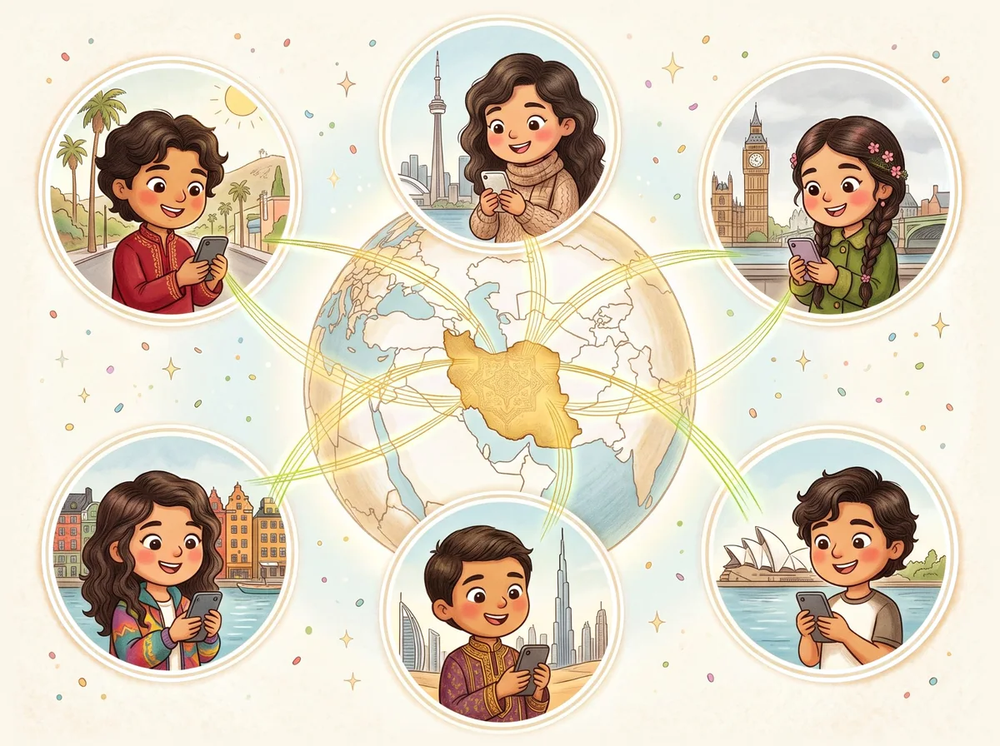

Investors
Planet Pooyah turns a documented problem, the loss of Persian reading and Iranian cultural knowledge across generations of the diaspora, into an app children want to open every day.

The need
Research on Iranian Americans finds the same pattern again and again.
-
Immigrants
Arrive with strong Persian and deep cultural knowledge.
-
Their children
Speak Persian at home, but often can't read or write it.
-
Their grandchildren
Have often lost the reading, the writing and the history.
What the research finds
Reading lags behind speaking
Iranian American families often speak Persian at home, but reading and writing lag well behind, partly because parents focus on English for school and careers.1,2
In college classrooms
Heritage learners in college value Persian but use it unevenly, and read it less well than they speak it.3 Most self-described bilingual students interviewed in New York and New Jersey called their reading and writing weak.4
In identity
Second-generation Iranian Americans keep their cultural and ethnic identity, but less strongly than their parents, since they grew up in America.5
A large community, growing from within
About 750,000 Iranian Americans in 2024, by Pew's count of anyone born in Iran, of Iranian ancestry or race, or with an Iranian parent.7 Large communities also live in Canada, Europe, Australia and the Gulf.
- Iranian Americans, 2024
- 750,000
- Born in the US
- 310,000
- +29% since 2019
- Living in California
- 375,000
- Nearly half
How many Iranian Americans?
2024, by who is counted
Community groups such as PAAIA estimate up to two million.10
Show as a table
| Count | Iranian Americans, 2024 |
|---|---|
| Pew: born in Iran, Iranian ancestry or race, or an Iranian parent | 750,000 |
| Census survey, analyzed by Pew: Iranian as a race answer | 583,000 |
| Census Bureau: Iranian ancestry | 525,913 (±21,422) |
| PAAIA community estimate | Up to 2,000,000 |
Where Iranian Americans were born
2024, Pew Research Center7
- Born abroad
- Born in the US
Pew finds the US-born, a second generation raised in English, drove most of the recent growth.
Show as a table
| Group | 2019 | 2024 |
|---|---|---|
| Born abroad | Not given | 445,000 |
| Born in the US | 240,000 | 310,000 |

The model
A game-like app built on what made Duolingo a daily habit: short lessons, streaks, XP, characters, stories and instant feedback.
Built for Persian and Iranian culture, history and literature, for children ages 5 to 14, with parents choosing and managing it.
Free
Reach as many families as possible.
- Every lesson
- Hearts that refill over time
- A short ad after each lesson
- One learner
Planet Pooyah+
Paid by families, funding new content.
- No ads, unlimited mistakes
- Up to four learners
- A weekly parent report
- Practice from their own mistakes
Freemium is proven at scale
Duolingo built the playbook: free lessons for everyone, and a subscription a small share of users choose to pay for.
Duolingo's users, third quarter of 2026
About 1 in 12 monthly users pays11
Show as a table
| Q3 2026 | Users | Change in a year |
|---|---|---|
| Monthly active users | 153.1 million | +13% |
| Daily active users | 64.9 million | +29% |
| Paid subscribers | 13.1 million | +14% |
A large category, an open niche
Language-app spending, 2024
About $1.1 billion in app stores, per Appfigures13
- Duolingo
- Other language apps
Show as a table
| 2024 | App-store spending |
|---|---|
| Duolingo | $678 million |
| Other language apps | About $440 million |
Heritage-language learning is an underserved niche here, and families have a strong reason to pay: they want their children to know where they come from.
Our niche: more than a language
Language apps like Duolingo teach words and grammar. Heritage families also want the history, customs and stories that tie their children to Iran.1,5,6 Planet Pooyah teaches both, on one path.
What each one teaches
- Language apps
- Language
- Planet Pooyah
- Language
- Culture
- Customs
- History
- Literature
- Mythology
51% of our new lessons go beyond the language (19 of 37)
Our lessons so far
Units 1 to 6, excluding reviews
Show as a table
| Topic | Lessons, Units 1 to 6 |
|---|---|
| Language | 18 |
| Literature and mythology | 11 |
| History | 5 |
| Culture and customs | 3 |
Why Planet Pooyah
| School or tutor | Books and videos | Language apps | Planet Pooyah | |
|---|---|---|---|---|
| Anywhere, on any schedule | Local, fixed times | Yes | Yes | Any device, minutes a day |
| A structured path | Yes | Rarely | Yes | From the first letter |
| No expertise needed from parents | The teacher leads | Parents must guide | Yes | Curriculum, sequence, motivation |
| Children want to come back | Depends on the teacher | Rarely | Streaks, rewards | Streaks, stories, rewards |
| Grows without more teachers | No | Yes | Yes | Yes |
| Iranian heritage | Depends on the program | Scattered | No | Culture, history, literature, mythology |
The need, the model, the market
The research shows the need. Duolingo shows the model works. And the Iranian diaspora is large and motivated enough to support a focused, high-quality platform for its children.
Get in touch on LinkedInSources
- Z. Sarlak-Ghassemi (2025), PhD dissertation on Persian family language policy in California and Tennessee, University of Memphis.
- M. Moeini Meybodi (2014), MA thesis on Persian language maintenance in Iranian American families, CUNY Graduate Center.
- A. Sedighi (2023), "Persian as a Diasporic Language in the United States: A Survey of Heritage Persian Learners at College Level", in Iranian and Minority Languages at Home and in Diaspora, De Gruyter Mouton, pp. 333–378.
- F. S. Ramezanzadeh (2010), Unveiling the Veiled and Veiling the Unveiled, PhD dissertation, University of Utah.
- F. J. Darnell (2002), "Iranian Americans: A comparative study of Iranian cultural retention among three generations of Iranian Americans", MA thesis, Humboldt State University.
- Y. M. Kaveh (2018), "Family language policy and maintenance of Persian: the stories of Iranian immigrant families in the northeast, USA", Language Policy 17(4): 443–477.
- Dalia Fahmy and Jeffrey S. Passel, "7 facts about Iranians in the U.S.", Pew Research Center, March 5, 2026.
- Pew Research Center, "How many people in the U.S. are Middle Eastern or North African?", Decoded, November 2, 2026.
- U.S. Census Bureau, American Community Survey 2024 1-year estimates, table B04006 (People reporting ancestry), "Iranian": 525,913 (±21,422).
- PAAIA, IAVote: About.
- Duolingo, Q3 2026 shareholder letter, November 3, 2026.
- Duolingo, Annual report on Form 10-K for 2025, February 27, 2026.
- Appfigures, "Duolingo's subscription revenue rose 567% in four years", January 3, 2025.